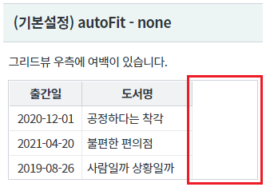
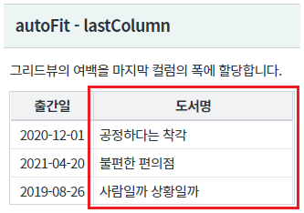
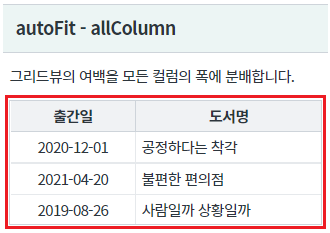
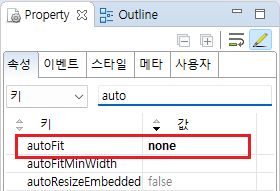
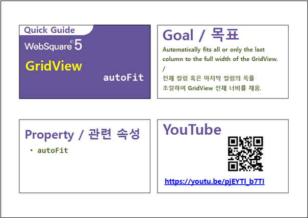

GridView의 속성 autoFit의 설정 값 비교 예제입니다. 속성 autoFit은 그리드뷰 컬럼의 폭을 그리드뷰의 너비에 맞춰 자동으로 조절하는 기능을 제공합니다.
속성 autoFit을 설정하면 그리드뷰에 가로 크롤이 생기지 않습니다.
그리드뷰의 너비가 기준 값보다 작을 때 가로 스크롤이 생기도록 설정하고자 하는 경우 속성 [autoFitMinWidth]를 추가 지정합니다.
폭 자동 조절 안 함(기본 설정)
마지막 컬럼의 폭이 자동 조절
모든 컬럼의 폭이 자동 조절
영역 [(기본설정) autoFit - none]에 있는 GridView를 확인합니다.
GridView의 너비가 모든 컬럼의 폭의 합산 값보다 크게 지정되어 우측에 여백이 있습니다.
[브라우저(Chrome) 실행 예시]

영역 [autoFit - lastColumn]의 GridView를 확인합니다.
마지막 컬럼의 폭이 자동 조절됩니다.
[브라우저(Chrome) 실행 예시]

영역 [autoFit - allColumn]의 GridView를 확인합니다.
모든 컬럼의 폭이 자동 조절됩니다.
[브라우저(Chrome) 실행 예시]

STEP1. GridView의 속성을 정의합니다.
[필수] autoFit="설정 값" //[default: none, lastColumn, allColumn] 폭 자동 조절
(설정 값)
none : 열의 너비를 자동 조정하지 않음
allColumn : 모든 열의 너비를 균등하게 조정
lastColumn : 마지막 열의 너비만 조정
그림 1.웹스퀘어5 SP5 스튜디오의 Property View(속성창) 예시

[소스 코드 예시]
<!-- gridView 의 소스 본문 예시 --> <w2:gridView autoFit="none" dataList="data:dlt_books" style="height: 90px;"> <!-- 중략 --> </w2:gridView>
autoFit
[웹스퀘어5 SP5 개발 가이드] GridView
링크 : https://docs1.inswave.com/sp5_user_guide/86bdcf48029b958b
[웹스퀘어5 SP5 개발 가이드] GridView 자동 맞춤 (autoFit)
링크 : https://docs1.inswave.com/sp5_user_guide/86bdcf48029b958b#9af6d3859befb6c8
GridView autoFit
링크 : https://youtu.be/pjEYTl_b7TI
